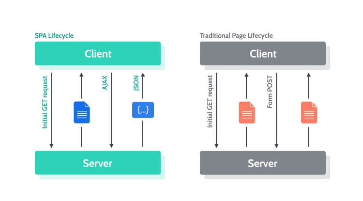

In HTML 4.01 (1999) or XHTML 1.1 (2001), it is necessary a DTD (Document Type Definition) with an FPI (Formal Public Identifier):
In HTML5 (2014), the declaration is "mostly useless, but required" and simple (case insensitive):
There are also a few self-closing tags, which means they don't need a separate closing tag as they don't contain anything in them.
Web App models: SPA (Single Page Application) x MPA (Multi-Page Application)
